library(datapasta)Lab 17: Pertussis Mini Project
Background
Pertussis (more commonly known as whooping cough) is a highly contagious respiratory disease caused by the bacterium Bordetella pertussis (Figure 1). People of all ages can be infected leading to violent coughing fits followed by a characteristic high-pitched “whoop” like intake of breath. Children have the highest risk for severe complications and death. Recent estimates from the WHO indicate that ~16 million cases and 200,000 infant deaths are due to pertussis annually (Black et al. 2010).
We will use the datapasta R package to “scrape” this data into R
Q1. With the help of the R “addin” package datapasta assign the CDC pertussis case number data to a data frame called cdc and use ggplot to make a plot of cases numbers over time.
cdc<- data.frame(
year = c(1922L,1923L,1924L,1925L,1926L,
1927L,1928L,1929L,1930L,1931L,
1932L,1933L,1934L,1935L,1936L,1937L,
1938L,1939L,1940L,1941L,1942L,
1943L,1944L,1945L,1946L,1947L,1948L,
1949L,1950L,1951L,1952L,1953L,1954L,
1955L,1956L,1957L,1958L,1959L,
1960L,1961L,1962L,1963L,1964L,1965L,
1966L,1967L,1968L,1969L,1970L,
1971L,1972L,1973L,1974L,1975L,1976L,
1977L,1978L,1979L,1980L,1981L,
1982L,1983L,1984L,1985L,1986L,1987L,1988L,1989L,1990L,1991L,1992L,1993L,
1994L,1995L,1996L,1997L,1998L,
1999L,2000L,2001L,2002L,2003L,2004L,
2005L,2006L,2007L,2008L,2009L,
2010L,2011L,2012L,2013L,2014L,2015L,
2016L,2017L,2018L,2019L,2020L,
2021L,2022L,2024L),
cases = c(107473,164191,165418,152003,
202210,181411,161799,197371,166914,
172559,215343,179135,265269,180518,
147237,214652,227319,103188,183866,
222202,191383,191890,109873,133792,
109860,156517,74715,69479,120718,
68687,45030,37129,60886,62786,
31732,28295,32148,40005,14809,11468,
17749,17135,13005,6799,7717,9718,
4810,3285,4249,3036,3287,1759,
2402,1738,1010,2177,2063,1623,1730,
1248,1895,2463,2276,3589,4195,
2823,3450,4157,4570,2719,4083,6586,
4617,5137,7796,6564,7405,7298,
7867,7580,9771,11647,25827,25616,
15632,10454,13278,16858,27550,18719,
48277,28639,32971,20762,17972,
18975,15609,18617,6124,2116,3044, 23544)
)
head(cdc) year cases
1 1922 107473
2 1923 164191
3 1924 165418
4 1925 152003
5 1926 202210
6 1927 181411library(ggplot2)baseplot<- ggplot(cdc)+
aes(x=year, y=cases)+
geom_point()+
geom_line()+
labs(x= "Year", y= "Number of Cases", title= "Number of reported Petussis Cases per Year (1922-2024)")
baseplot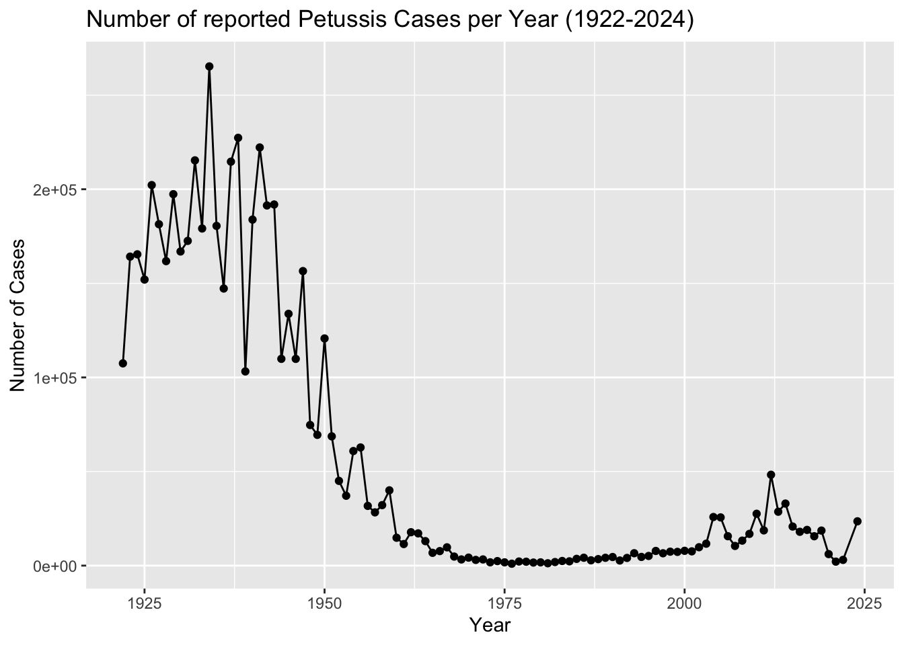
Q2. Using the ggplot geom_vline() function add lines to your previous plot for the 1946 introduction of the wP vaccine and the 1996 switch to aP vaccine (see example in the hint below). What do you notice?
baseplot+
geom_vline(xintercept=1946, col="blue", )+
geom_text(x=1946,y=250000, label="wP vaccine", col="blue" )+
geom_vline(xintercept=1996, col="red")+
geom_text(x=1996,y=250000, label="aP vaccine", col="red" )+
geom_vline(xintercept=2020, col="green")+
geom_text(x=2020,y=250000, label="COVID pand.",col="green" )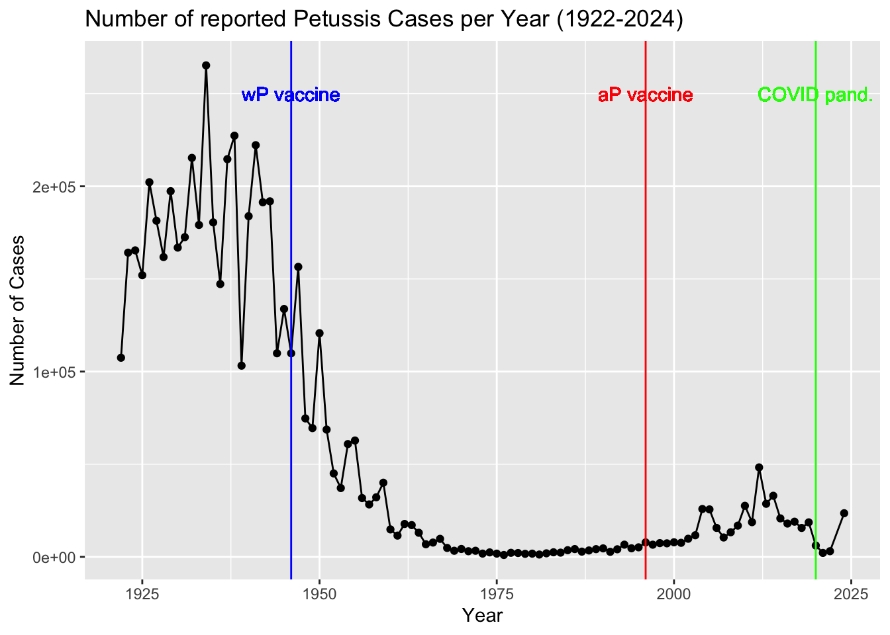
Q3. Describe what happened after the introduction of the aP vaccine? Do you have a possible explanation for the observed trend?
After the introduction of the acellular pertussis (aP) vaccine in 1996, pertussis cases gradually increased over the following decade, unlike the sustained suppression seen with the previous whole-cell (wP) vaccine. This trend may be due to waning immunity from the aP vaccine, increasing vaccine hesitancy driven by misinformation, and possible bacterial adaptations. Notably, pertussis cases dropped during the COVID-19 pandemic, likely due to social distancing and masking. A similar 10-year lag in rising cases after aP introduction has been observed in other countries, such as Japan and the UK, suggesting a broader trend in immunity dynamics.
CMI-PB make all their data freely available via JSON format tables from their database
Lets read the first one of these tables:
library(jsonlite)subject<- read_json("https://www.cmi-pb.org/api/v5/subject", simplifyVector = TRUE)
head(subject) subject_id infancy_vac biological_sex ethnicity race
1 1 wP Female Not Hispanic or Latino White
2 2 wP Female Not Hispanic or Latino White
3 3 wP Female Unknown White
4 4 wP Male Not Hispanic or Latino Asian
5 5 wP Male Not Hispanic or Latino Asian
6 6 wP Female Not Hispanic or Latino White
year_of_birth date_of_boost dataset
1 1986-01-01 2016-09-12 2020_dataset
2 1968-01-01 2019-01-28 2020_dataset
3 1983-01-01 2016-10-10 2020_dataset
4 1988-01-01 2016-08-29 2020_dataset
5 1991-01-01 2016-08-29 2020_dataset
6 1988-01-01 2016-10-10 2020_datasetnrow(subject)[1] 172Q4. How many aP and wP infancy vaccinated subjects are in the dataset?
table(subject$infancy_vac)
aP wP
87 85 There are 87 aP subjects and 85 wP subjects in the dataset
Q5. How many Male and Female subjects/patients are in the dataset?
table(subject$biological_sex)
Female Male
112 60 There are 112 females and 60 males in this dataset
Q6. What is the breakdown of race and biological sex (e.g. number of Asian females, White males etc…)?
table(subject$race, subject$biological_sex)
Female Male
American Indian/Alaska Native 0 1
Asian 32 12
Black or African American 2 3
More Than One Race 15 4
Native Hawaiian or Other Pacific Islander 1 1
Unknown or Not Reported 14 7
White 48 32This table presents a breakdown of sex across different racial groups in the dataset, but it does not accurately reflect the overall demographics of the U.S. population.
Q7. Q7. Using this approach determine (i) the average age of wP individuals, (ii) the average age of aP individuals; and (iii) are they significantly different?
library(lubridate)
Attaching package: 'lubridate'The following objects are masked from 'package:base':
date, intersect, setdiff, unionsubject$age <- today() - ymd(subject$year_of_birth)library(dplyr)
Attaching package: 'dplyr'The following objects are masked from 'package:stats':
filter, lagThe following objects are masked from 'package:base':
intersect, setdiff, setequal, unionap <- subject %>% filter(infancy_vac == "aP")
round( summary( time_length( ap$age, "years" ) ) ) Min. 1st Qu. Median Mean 3rd Qu. Max.
22 26 27 27 28 34 wp <- subject %>% filter(infancy_vac== "wP")
round( summary( time_length( wp$age, "years" ) ) ) Min. 1st Qu. Median Mean 3rd Qu. Max.
22 32 34 36 39 57 head(wp) subject_id infancy_vac biological_sex ethnicity race
1 1 wP Female Not Hispanic or Latino White
2 2 wP Female Not Hispanic or Latino White
3 3 wP Female Unknown White
4 4 wP Male Not Hispanic or Latino Asian
5 5 wP Male Not Hispanic or Latino Asian
6 6 wP Female Not Hispanic or Latino White
year_of_birth date_of_boost dataset age
1 1986-01-01 2016-09-12 2020_dataset 14313 days
2 1968-01-01 2019-01-28 2020_dataset 20888 days
3 1983-01-01 2016-10-10 2020_dataset 15409 days
4 1988-01-01 2016-08-29 2020_dataset 13583 days
5 1991-01-01 2016-08-29 2020_dataset 12487 days
6 1988-01-01 2016-10-10 2020_dataset 13583 daysttest<- t.test(round(summary(time_length(ap$age,"years"))),round(summary(time_length(wp$age, "years"))))
ttest
Welch Two Sample t-test
data: round(summary(time_length(ap$age, "years"))) and round(summary(time_length(wp$age, "years")))
t = -1.8809, df = 6.1212, p-value = 0.108
alternative hypothesis: true difference in means is not equal to 0
95 percent confidence interval:
-21.417056 2.750389
sample estimates:
mean of x mean of y
27.33333 36.66667 The average age of subjects who received the aP vaccine is 27 years, while those who received the wP vaccine have an average age of 36 years. However, with a p-value of 0.108, this difference is not statistically significant, suggesting no strong evidence of an age-related disparity between the two groups.
Q8. Determine the age of all individuals at time of boost?
int <- ymd(subject$date_of_boost) - ymd(subject$year_of_birth)
age_at_boost <- time_length(int, "year")
head(age_at_boost)[1] 30.69678 51.07461 33.77413 28.65982 25.65914 28.77481Q9. With the help of a faceted boxplot or histogram (see below), do you think these two groups are significantly different?
library(ggplot2)
ggplot(subject, aes(x = as.numeric(age), fill = as.factor(infancy_vac))) +
geom_histogram(show.legend = FALSE, bins = 30) +
facet_wrap(vars(infancy_vac), nrow = 2) +
xlab("Age in years") +
theme_minimal()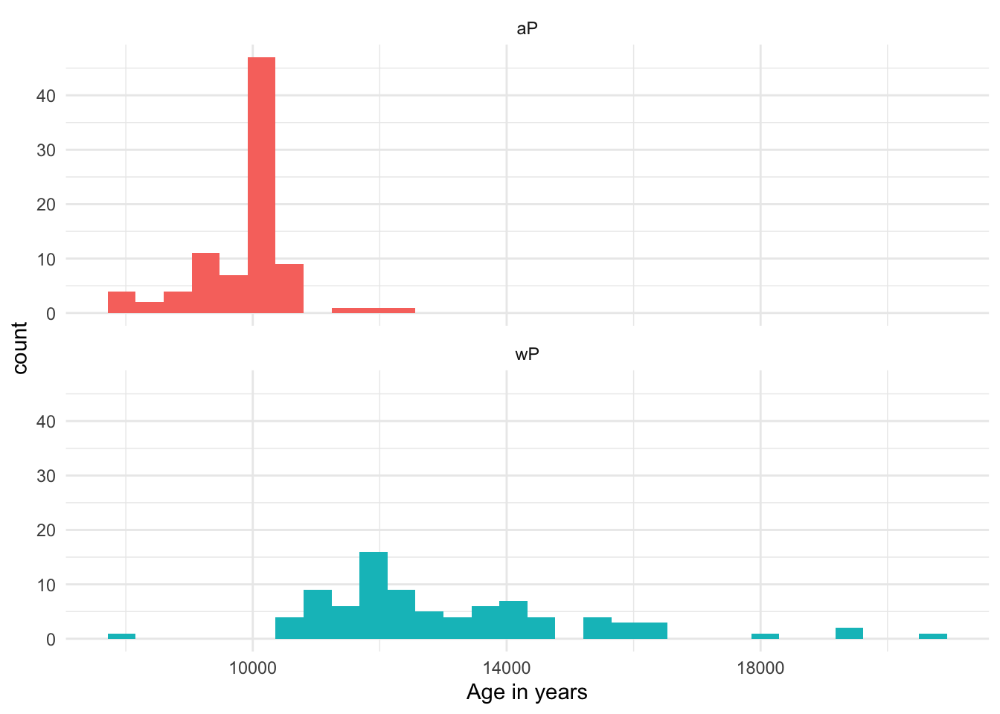
Based on these histograms, the two groups appear to be statistically different. The age distribution of the wP vaccine group is noticeably skewed toward older individuals, with a longer tail extending into higher age ranges. In contrast, the aP vaccine group has a more compact distribution, with ages concentrated in the younger range. This distinction suggests a meaningful difference in the age demographics of the two groups.
Joining Tables with dplyr
library(jsonlite)
specimen<- read_json("https://www.cmi-pb.org/api/v5/specimen", simplifyVector = TRUE)
head(specimen) specimen_id subject_id actual_day_relative_to_boost
1 1 1 -3
2 2 1 1
3 3 1 3
4 4 1 7
5 5 1 11
6 6 1 32
planned_day_relative_to_boost specimen_type visit
1 0 Blood 1
2 1 Blood 2
3 3 Blood 3
4 7 Blood 4
5 14 Blood 5
6 30 Blood 6Q9. Complete the code to join specimen and subject tables to make a new merged data frame containing all specimen records along with their associated subject details:
library(dplyr)
meta<- inner_join(subject, specimen)Joining with `by = join_by(subject_id)`Joining with by = join_by(subject_id)
head(meta) subject_id infancy_vac biological_sex ethnicity race
1 1 wP Female Not Hispanic or Latino White
2 1 wP Female Not Hispanic or Latino White
3 1 wP Female Not Hispanic or Latino White
4 1 wP Female Not Hispanic or Latino White
5 1 wP Female Not Hispanic or Latino White
6 1 wP Female Not Hispanic or Latino White
year_of_birth date_of_boost dataset age specimen_id
1 1986-01-01 2016-09-12 2020_dataset 14313 days 1
2 1986-01-01 2016-09-12 2020_dataset 14313 days 2
3 1986-01-01 2016-09-12 2020_dataset 14313 days 3
4 1986-01-01 2016-09-12 2020_dataset 14313 days 4
5 1986-01-01 2016-09-12 2020_dataset 14313 days 5
6 1986-01-01 2016-09-12 2020_dataset 14313 days 6
actual_day_relative_to_boost planned_day_relative_to_boost specimen_type
1 -3 0 Blood
2 1 1 Blood
3 3 3 Blood
4 7 7 Blood
5 11 14 Blood
6 32 30 Blood
visit
1 1
2 2
3 3
4 4
5 5
6 6Q10. Now using the same procedure join meta with titer data so we can further analyze this data in terms of time of visit aP/wP, male/female etc.
abdata<- read_json("https://www.cmi-pb.org/api/v5/plasma_ab_titer", simplifyVector = TRUE)
head(abdata) specimen_id isotype is_antigen_specific antigen MFI MFI_normalised
1 1 IgE FALSE Total 1110.21154 2.493425
2 1 IgE FALSE Total 2708.91616 2.493425
3 1 IgG TRUE PT 68.56614 3.736992
4 1 IgG TRUE PRN 332.12718 2.602350
5 1 IgG TRUE FHA 1887.12263 34.050956
6 1 IgE TRUE ACT 0.10000 1.000000
unit lower_limit_of_detection
1 UG/ML 2.096133
2 IU/ML 29.170000
3 IU/ML 0.530000
4 IU/ML 6.205949
5 IU/ML 4.679535
6 IU/ML 2.816431ab<- inner_join(abdata, meta)Joining with `by = join_by(specimen_id)`head(ab) specimen_id isotype is_antigen_specific antigen MFI MFI_normalised
1 1 IgE FALSE Total 1110.21154 2.493425
2 1 IgE FALSE Total 2708.91616 2.493425
3 1 IgG TRUE PT 68.56614 3.736992
4 1 IgG TRUE PRN 332.12718 2.602350
5 1 IgG TRUE FHA 1887.12263 34.050956
6 1 IgE TRUE ACT 0.10000 1.000000
unit lower_limit_of_detection subject_id infancy_vac biological_sex
1 UG/ML 2.096133 1 wP Female
2 IU/ML 29.170000 1 wP Female
3 IU/ML 0.530000 1 wP Female
4 IU/ML 6.205949 1 wP Female
5 IU/ML 4.679535 1 wP Female
6 IU/ML 2.816431 1 wP Female
ethnicity race year_of_birth date_of_boost dataset
1 Not Hispanic or Latino White 1986-01-01 2016-09-12 2020_dataset
2 Not Hispanic or Latino White 1986-01-01 2016-09-12 2020_dataset
3 Not Hispanic or Latino White 1986-01-01 2016-09-12 2020_dataset
4 Not Hispanic or Latino White 1986-01-01 2016-09-12 2020_dataset
5 Not Hispanic or Latino White 1986-01-01 2016-09-12 2020_dataset
6 Not Hispanic or Latino White 1986-01-01 2016-09-12 2020_dataset
age actual_day_relative_to_boost planned_day_relative_to_boost
1 14313 days -3 0
2 14313 days -3 0
3 14313 days -3 0
4 14313 days -3 0
5 14313 days -3 0
6 14313 days -3 0
specimen_type visit
1 Blood 1
2 Blood 1
3 Blood 1
4 Blood 1
5 Blood 1
6 Blood 1dim(ab)[1] 52576 21Q11. How many specimens (i.e. entries in abdata) do we have for each isotype?
table(ab$isotype)
IgE IgG IgG1 IgG2 IgG3 IgG4
6698 5389 10117 10124 10124 10124 Q12. What are the different $dataset values in abdata and what do you notice about the number of rows for the most “recent” dataset?
table(ab$dataset)
2020_dataset 2021_dataset 2022_dataset 2023_dataset
31520 8085 7301 5670 The table displays the different $dataset values, representing the number of samples assessed each year in the abdata project. Notably, the most recent dataset has fewer rows, likely due to the limited time available for sample collection and analysis compared to previous years.
How many anitgens are there?
table(ab$antigen)
ACT BETV1 DT FELD1 FHA FIM2/3 LOLP1 LOS Measles OVA
1970 1970 4978 1970 5372 4978 1970 1970 1970 4978
PD1 PRN PT PTM Total TT
1970 5372 5372 1970 788 4978 Lets focus in on IgG - one of the main antibody types responsive to bacteria or viral infection
igg<- filter(ab, isotype=="IgG")
head(igg) specimen_id isotype is_antigen_specific antigen MFI MFI_normalised
1 1 IgG TRUE PT 68.56614 3.736992
2 1 IgG TRUE PRN 332.12718 2.602350
3 1 IgG TRUE FHA 1887.12263 34.050956
4 19 IgG TRUE PT 20.11607 1.096366
5 19 IgG TRUE PRN 976.67419 7.652635
6 19 IgG TRUE FHA 60.76626 1.096457
unit lower_limit_of_detection subject_id infancy_vac biological_sex
1 IU/ML 0.530000 1 wP Female
2 IU/ML 6.205949 1 wP Female
3 IU/ML 4.679535 1 wP Female
4 IU/ML 0.530000 3 wP Female
5 IU/ML 6.205949 3 wP Female
6 IU/ML 4.679535 3 wP Female
ethnicity race year_of_birth date_of_boost dataset
1 Not Hispanic or Latino White 1986-01-01 2016-09-12 2020_dataset
2 Not Hispanic or Latino White 1986-01-01 2016-09-12 2020_dataset
3 Not Hispanic or Latino White 1986-01-01 2016-09-12 2020_dataset
4 Unknown White 1983-01-01 2016-10-10 2020_dataset
5 Unknown White 1983-01-01 2016-10-10 2020_dataset
6 Unknown White 1983-01-01 2016-10-10 2020_dataset
age actual_day_relative_to_boost planned_day_relative_to_boost
1 14313 days -3 0
2 14313 days -3 0
3 14313 days -3 0
4 15409 days -3 0
5 15409 days -3 0
6 15409 days -3 0
specimen_type visit
1 Blood 1
2 Blood 1
3 Blood 1
4 Blood 1
5 Blood 1
6 Blood 1Q13. Complete the following code to make a summary boxplot of Ab titer levels (MFI) for all antigens:
ggplot(igg)+
aes(MFI_normalised, antigen)+
geom_boxplot()+
facet_wrap(vars(visit), nrow=2)+
xlim(0,75)Warning: Removed 5 rows containing non-finite outside the scale range
(`stat_boxplot()`).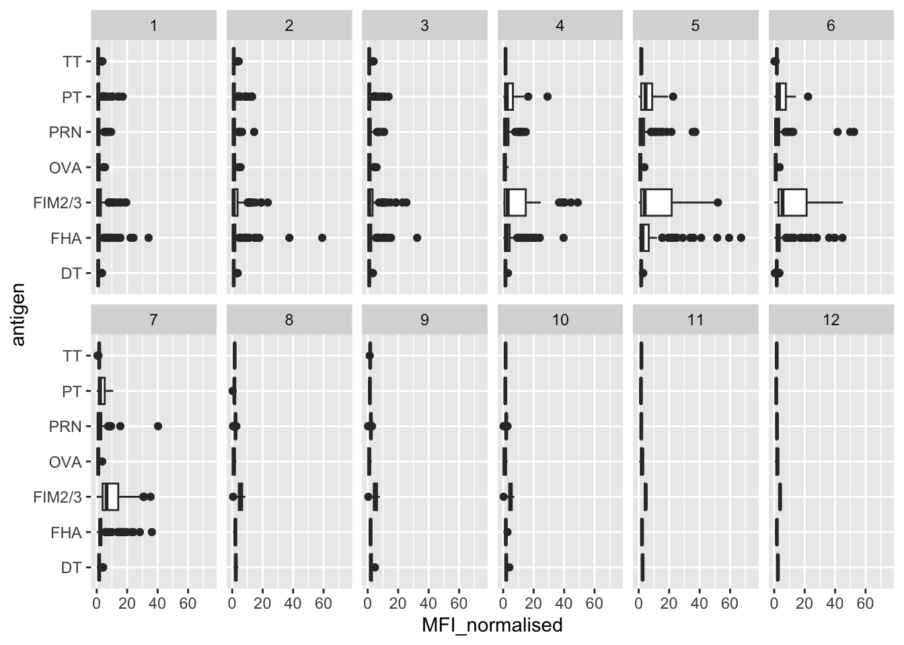
Q14. What antigens show differences in the level of IgG antibody titers recognizing them over time? Why these and not others?
Certain antigens, including PT, PRN, FIM2/2, and FHA, exhibit changes in IgG antibody titers over time. These differences may arise because these antigens play a more prominent role in immune recognition or vaccine response. In contrast, other antigens may not show significant variation if they are either absent from the bacteria or less critical in eliciting a protective immune response.
Let’s color by aP/wP
ggplot(igg)+
aes(MFI_normalised, antigen, col=infancy_vac)+
geom_boxplot(show.legend = FALSE)+facet_wrap(vars(visit), nrow=2)+
xlim(0,75)Warning: Removed 5 rows containing non-finite outside the scale range
(`stat_boxplot()`).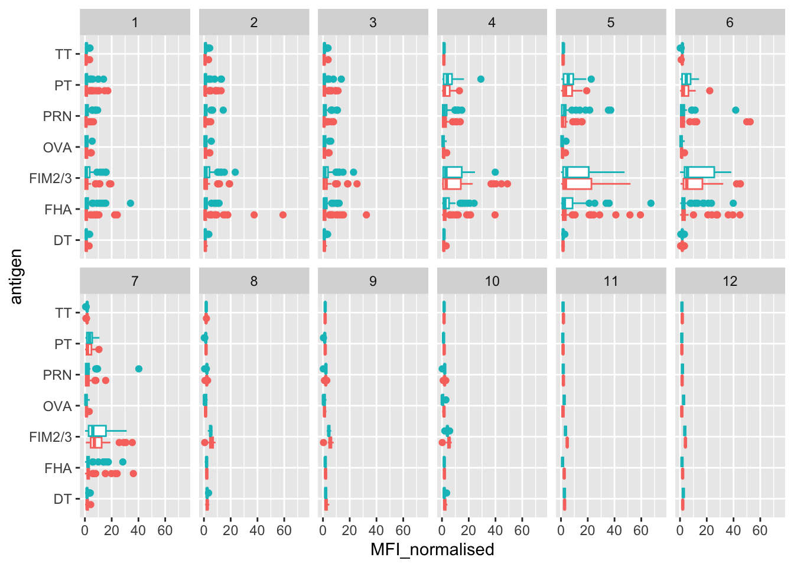
table(igg$visit)
1 2 3 4 5 6 7 8 9 10 11 12
902 902 930 559 559 540 525 150 147 133 21 21 Since data for all subjects beyond visit 8 is not yet available, we will exclude these visits from the analysis.
igg_7<- filter(igg, visit%in% 1:7)
table(igg_7$visit)
1 2 3 4 5 6 7
902 902 930 559 559 540 525 ggplot(igg_7)+
aes(MFI_normalised, antigen, col=infancy_vac)+
geom_boxplot(show.legend = FALSE)+
facet_wrap(vars(visit), nrow=2)+
xlim(0,75)Warning: Removed 5 rows containing non-finite outside the scale range
(`stat_boxplot()`).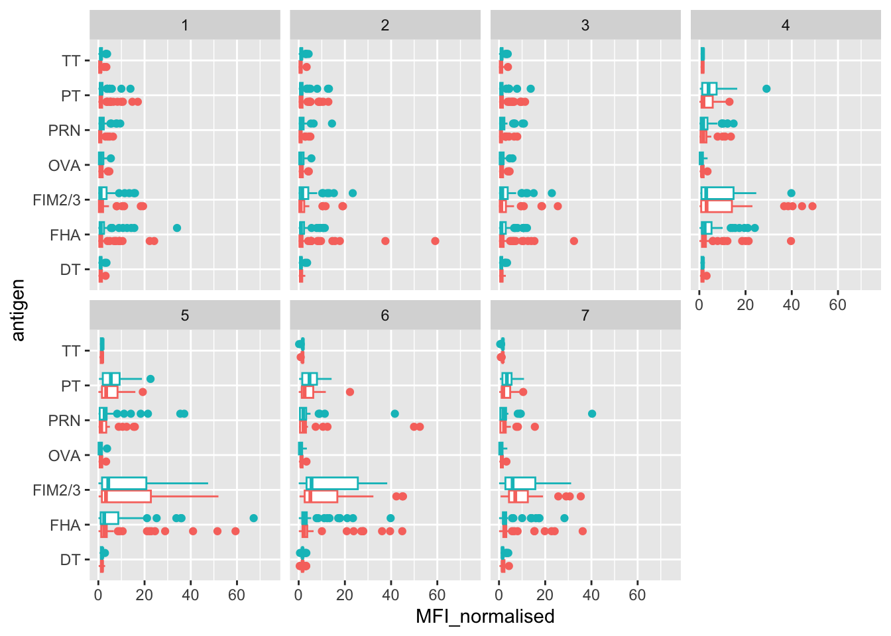
Another version of the plot
igg %>% filter(visit != 8) %>%
ggplot() +
aes(MFI_normalised, antigen, col=infancy_vac ) +
geom_boxplot(show.legend = FALSE) +
xlim(0,75) +
facet_wrap(vars(infancy_vac, visit), nrow=2)Warning: Removed 5 rows containing non-finite outside the scale range
(`stat_boxplot()`).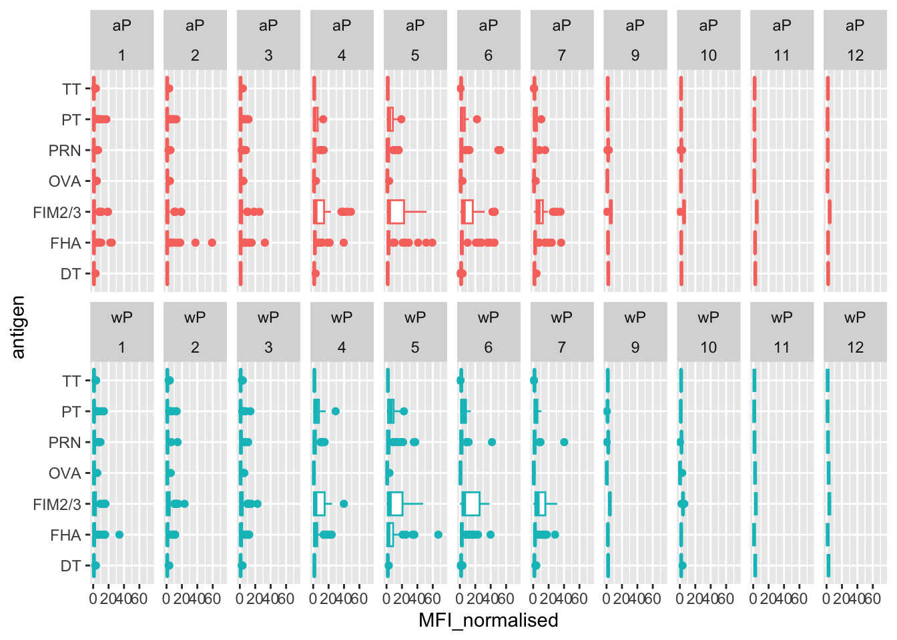
Q15. Filter to pull out only two specific antigens for analysis and create a boxplot for each. You can chose any you like. Below I picked a “control” antigen (“OVA”, that is not in our vaccines) and a clear antigen of interest (“PT”, Pertussis Toxin, one of the key virulence factors produced by the bacterium B. pertussis).
filter(igg, antigen=="OVA") %>%
ggplot() +
aes(MFI_normalised, col=infancy_vac) +
geom_boxplot(show.legend = F) +
facet_wrap(vars(visit)) +
theme_bw()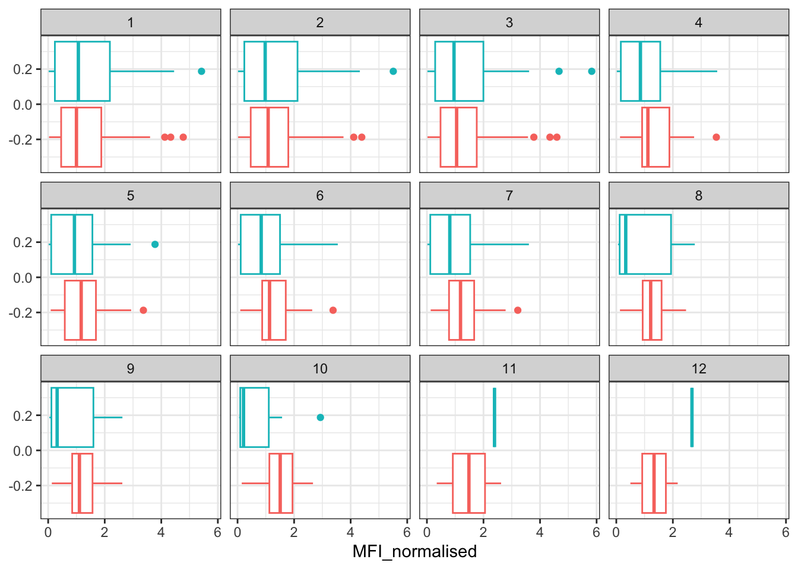
filter(igg, antigen=="FIM2/3") %>%
ggplot() +
aes(MFI_normalised, col=infancy_vac) +
geom_boxplot(show.legend = F) +
facet_wrap(vars(visit)) +
theme_bw()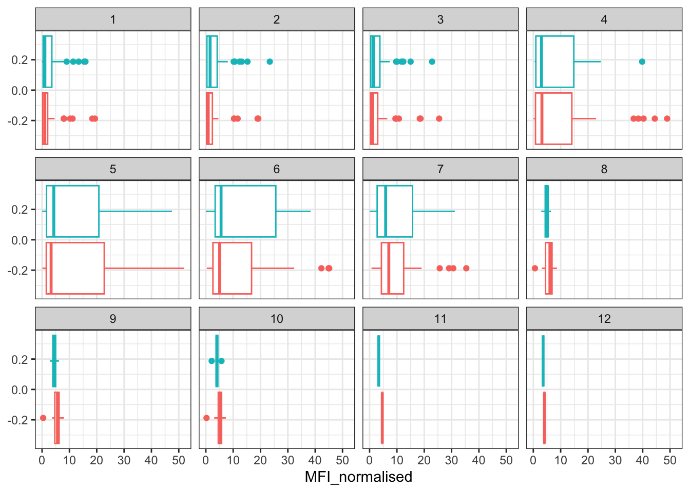
filter(igg, antigen=="PT") %>%
ggplot() +
aes(MFI_normalised, col=infancy_vac) +
geom_boxplot(show.legend = F) +
facet_wrap(vars(visit)) +
theme_bw()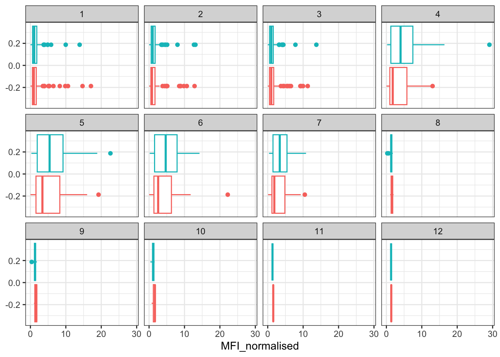
Q16. What do you notice about these two antigens time courses and the PT data in particular?
The time course of the OVA antigen remains relatively stable, with minimal changes in MFI levels across visits 1–7. In contrast, the PT antigen shows a distinct trend, with MFI levels gradually increasing over time. Visits 1–3 exhibit low MFI, followed by a sharp rise between visits 4–7, before returning to baseline levels after visit 7.
Q17. Do you see any clear difference in aP vs. wP responses?
Visually, the aP vaccine appears to elicit a slightly stronger response than the wP vaccine in OVA antigen plots, while PT responses seem relatively similar between the two. However, determining the statistical significance of these differences is challenging due to the presence of outliers and variability, which introduce some uncertainty.
Let’s try a different plot first and focus on one antigen, start with PT (pertussis toxin) and plot visit or time on the x-axis and MFI on y-axis
abdata.21 <- ab %>% filter(dataset == "2021_dataset")
abdata.21 %>%
filter(isotype == "IgG", antigen == "PT") %>%
ggplot() +
aes(x=planned_day_relative_to_boost,y=MFI_normalised,
col=infancy_vac,
group=subject_id) +
geom_point() +
geom_line() +
geom_vline(xintercept=0, linetype="dashed") +
geom_vline(xintercept=14, linetype="dashed") +
labs(title="2021 dataset IgG PT",
subtitle = "Dashed lines indicate day 0 (pre-boost) and 14 (apparent peak levels)")
Q18. Does this trend look similar for the 2020 dataset?
abdata.20 <- ab %>% filter(dataset == "2020_dataset")
abdata.20 %>%
filter(isotype == "IgG", antigen == "PT") %>%
ggplot() +
aes(x=planned_day_relative_to_boost,
y=MFI_normalised,
col=infancy_vac,
group=subject_id) +
geom_point() +
geom_line() +
xlim(0,125)+
geom_vline(xintercept=0, linetype="dashed") +
geom_vline(xintercept=14, linetype="dashed") +
labs(title="2020 dataset IgG PT",
subtitle = "Dashed lines indicate day 0 (pre-boost) and 14 (apparent peak levels)")Warning: Removed 3 rows containing missing values or values outside the scale range
(`geom_point()`).Warning: Removed 3 rows containing missing values or values outside the scale range
(`geom_line()`).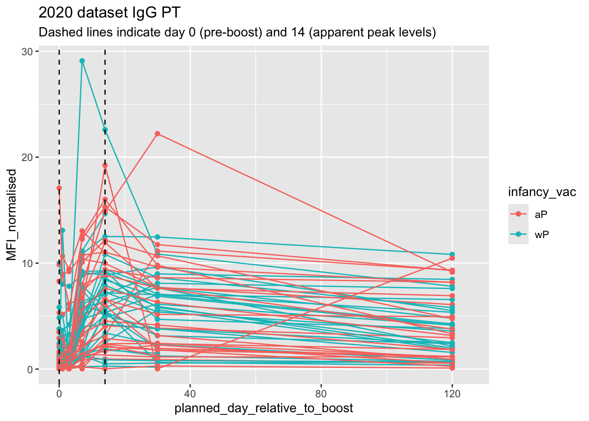
Compared to the 2020 dataset, both exhibit similar patterns, with significant fluctuations in MFI values during the first 40 days, followed by stabilization between days 40 and 120. However, a notable difference is that the 2020 wP data does not reach the same peak MFI levels as observed in the 2021 dataset. In contrast, the aP trends remain highly consistent across both years.
Obtaining CMI-PB RNASeq data
url <- "https://www.cmi-pb.org/api/v2/rnaseq?versioned_ensembl_gene_id=eq.ENSG00000211896.7"
rna <- read_json(url, simplifyVector = TRUE)
ssrna <- inner_join(rna, meta)Joining with `by = join_by(specimen_id)`Q19. Make a plot of the time course of gene expression for IGHG1 gene (i.e. a plot of visit vs. tpm).
ggplot(ssrna) +
aes(visit, tpm, group=subject_id) +
geom_point() +
geom_line(alpha=0.2)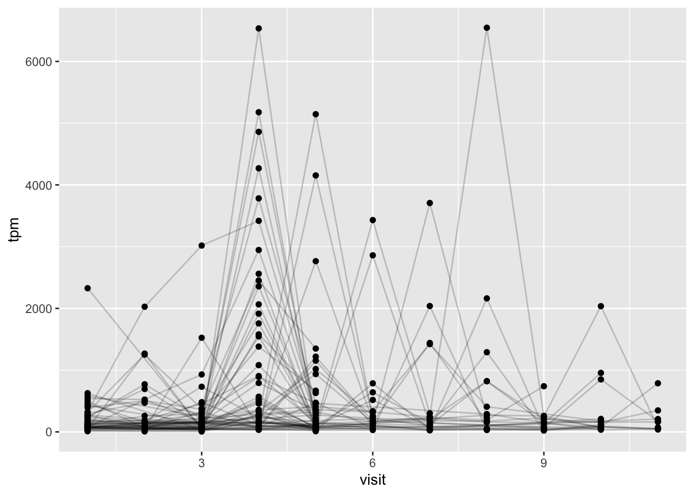
Q20. What do you notice about the expression of this gene (i.e. when is it at it’s maximum level)?
The expression of this gene is low during the earliest and latest visits, peaking between visits 4 and 7. Its highest levels occur at visits 4 and 8, while it fluctuates in between, reaching its lowest points around visits 2 and 10.
Q21. Does this pattern in time match the trend of antibody titer data? If not, why not?
Yes, this pattern closely aligns with the trend observed in the antibody titer data. Similar to the PT antigen titers, expression levels start off low, gradually increase, and peak between visits 4 and 7 before declining after visit 7. This mirrors the MFI levels depicted in the titer graphs.
ggplot(ssrna) +
aes(tpm, col=infancy_vac) +
geom_boxplot() +
facet_wrap(vars(visit))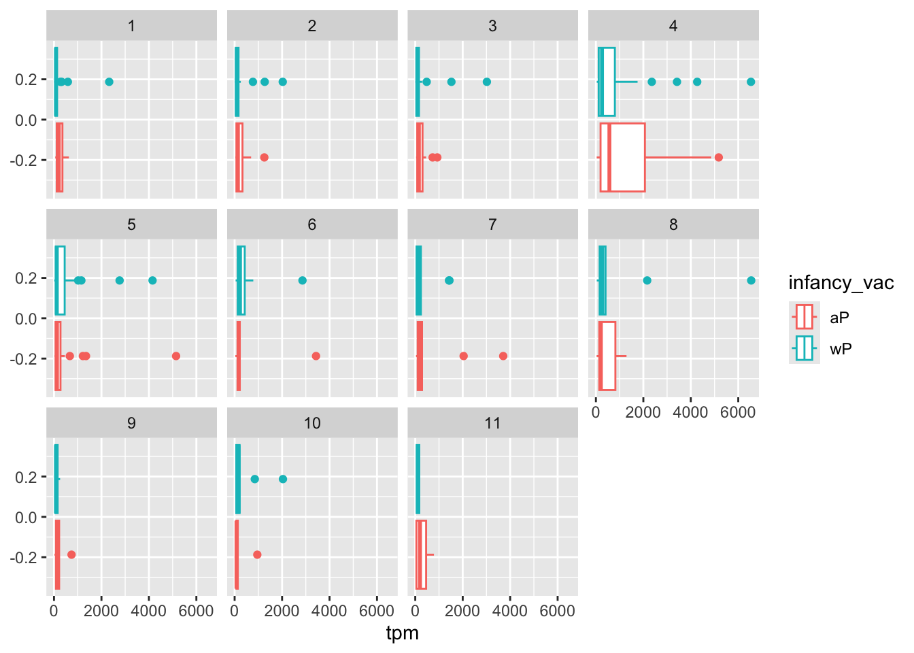
ssrna %>%
filter(visit==4) %>%
ggplot() +
aes(tpm, col=infancy_vac) + geom_density() +
geom_rug()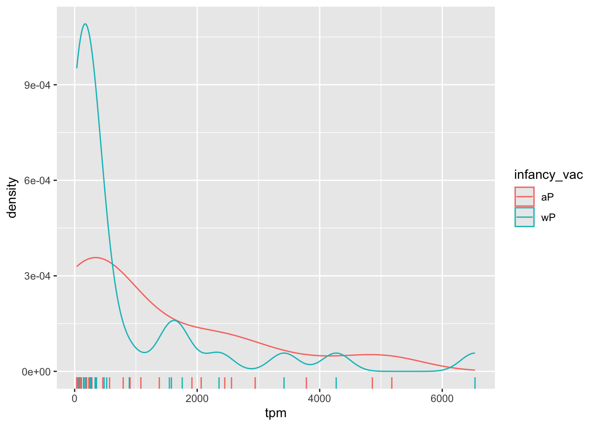